Плодовитость. Кладка. Инкубация яиц.
Итак, подошло то милое время, когда ваш любимец достиг половозрелого возраста (появился половой орган). Теперь (если у улитки есть сосед ее вида или самооплодотворение) Вам придется регулярно отправлять кладки в морозилку. Почему сразу в морозилку? Всё просто! Вы физически не сможете предоставить необходимый уход всем 100-200 улитятам. Да и сколько нужно террариумов для такой колонии? Cколько овощей, мела, дафнии? Вернемся немного назад.
ПЛОДОВИТОСТЬ У УЛИТОК.
Плодовитость АХАТИН крайне велика. За одну кладку особь откладывает от 50 до 800 яиц. В отличие от них, АРХАХАТИНЫ менее плодовиты - за одну кладку особь откладывает в среднем 4-6 яичек.
Вынашивание и инкубирование кладки продолжается от 2-х до 4-х недель. Если после истечения срока яйца не вылупились, то улитки подкинули Вам пустую кладку или же Вы сами неправильно инкубировали яйца. Частота кладок сугубо индивидуальна.
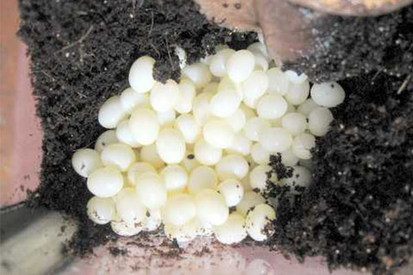 |
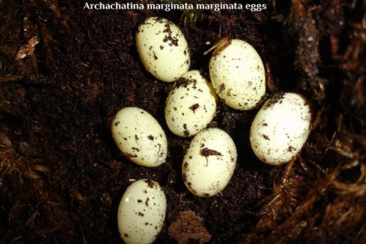 |
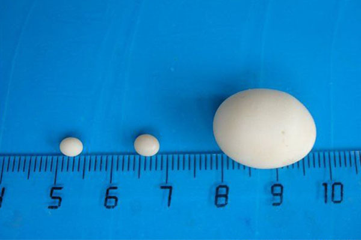 |
ИНКУБАЦИЯ ЯИЦ.
Если Вы смотрите данный раздел, то скорее всего у Вас появилась долгожданная кладочка. Мои поздравления, если это так :) А теперь непосредственно к делу. Инкубация яиц происходит легко и просто. Вам понадобится небольшой контейнер, немного грунта (прокипяченого и промытого), теплота и влажность. Берете контейнер, выкладываете в него немного грунта, равномерно распределив. Сверху на грунт аккуратно перекладываете яйца из террариума родителей в контейнер, распределяете равномерно. Сверху слегка присыпаете грунтом. Создаете температурные условия как у родителей. Не давайте высохнуть грунту, но и не переувлажняйте его. Не забудьте сделать правильную вентиляцию. Удачной инкубации
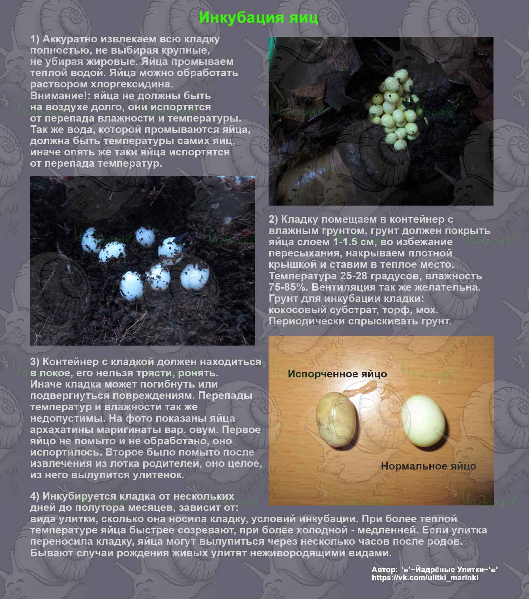 |
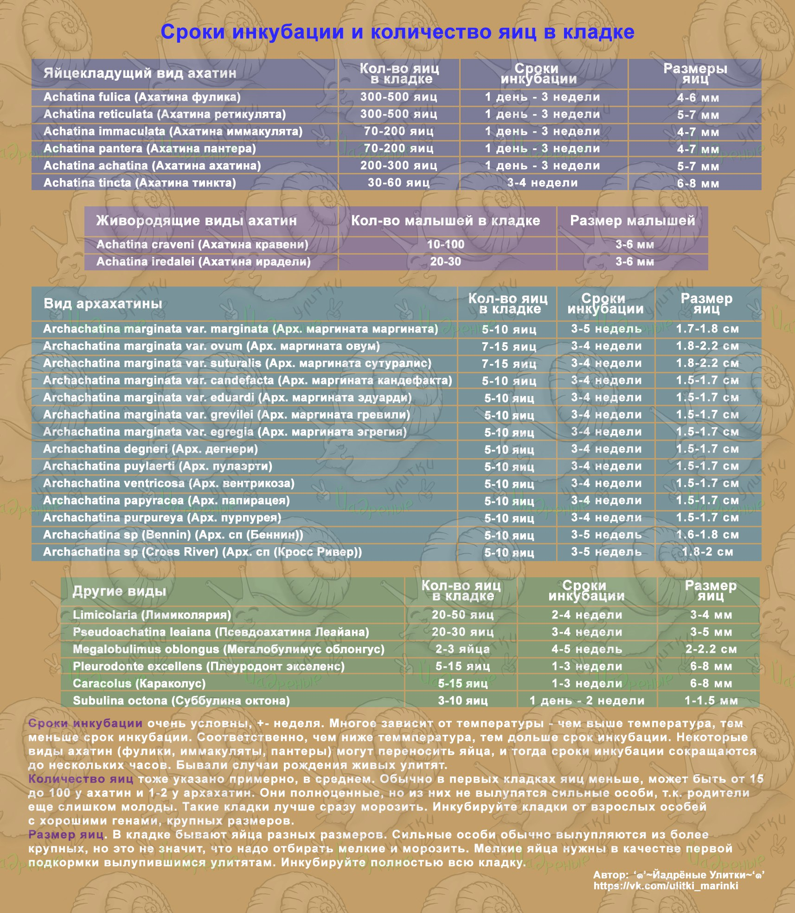 |
УХОД ЗА НОВОРОЖДЕННЫМИ
Новорожденных улитят не рекомендуется брать на руки минимум (!) в течение недели, далее только при острой необходимости. Первые пару дней они будут кушать свои скорлупки, после этого можно положить сверху лист салата и посыпать кальцием. Почему салат? Он богат витаминами, легко жуется, что важно для малышей. Если вдруг салата под рукой нет, можно тонко (до прозрачного слоя) нарезать любой продукт средней жесткости, например, кабачок. Давать мягкие продукты типа бананов не рекомендуется - малыши могут случайно задохнуться. К тому же, пока у нас нет миски, еда быстро "расползется" по грунту и начнет гнить.
Белковые подкормки начинаем вводить постепенно, в очень малых дозах. В остальном все делаем аналогично с уходом за взрослыми улитками - ежедневно меняем еду и раз в неделю протираем влажной тряпочкой стенки террариума. Не забудьте, что важно своевременно увеличивать размер контейнера! Еще о том, как растить малышей: VK E-snail*@ii*club
ОТБРАКОВКА.
Теперь поговорим об отбраковке.
Отбраковка необходима для получения самых сильных улиток из потомства .Она происходит в несколько этапов.Как именно это происходит : Вы выбираете из кладки самые крупные яйца (10-15 шт),остальных замораживаете. Но лучше всего оставлять всю кладку, тогда ваша отбраковка будет более точной. Инкубируете.
Инкубация проводится в отдельном контейнере, с аналогичными условиями, что и у родителей (у более сложных видов, правда, процесс немного иной).
Спустя 1-2 недели после вылупления происходит второй этап отбраковки. Выбираете самых крупных и активных особей, остальных замораживаете. По желанию можно сделать и третий этап отбраковки спустя 1-2 недели. В итоге Вы должны оставить то количество улиток, которое сможете прокормить/раздать и сможете обеспечить правильный уход.
Важно помнить, что если родители-улитки ген.брак или не соответствуют хотя бы средним нормам для разведения, то не стоит оставлять от них потомство. Тем более отдавать\продавать улиток совсем ничего не понимающим новичкам. Кладки подобных особей лучше всего оставлять в морозилке или же просто высушить.
- ДЕЗИНФЕКЦИЯ КЛАДОК: VK Спиральный терем ; VK Йадреные улитки
- ЧТО ТАКОЕ ОТБРАКОВКА И ЗАЧЕМ ОНА НУЖНА?
Жестокость или необходимая мера?
Итак, что же такое отбраковка? Это процесс отбора самых жизнеспособных особей. Определяется это скоростью роста, активностью и т.п.
Зачем она нужна и для чего это делается?
- что-бы сократить к минимуму возможность слабых особей в кладке от ваших улиток.
Слабые особи, именуемые общим словосочетанием "генетический брак", сокращенно - "ген. брак" есть в КАЖДОЙ кладке. Распространять таких особей категорически нельзя, это ведет к вырождению разводимого вида. Да и конечно же, каждому ведь хочется получить здоровое, красивое животное, которое долго будет жить и радовать хозяина. Распространять ген. брак безответственно и жестоко.
Почему жестоко? Потому что эти слабые особи будут часто болеть, мучаться, мучать хозяина, и, в конце концов , либо окажутся в морозилке (в лучшем из случаев), либо мучительно проживут свой срок, пусть и немного меньше, чем сильная особь.
Отсутствие отбраковки так же ведет к различным мутациям, таким как, деформация раковины, сросшимся щупальцам, лишним щупальцам и даже их отсутствию. (фото ниже)*
Различных аномалий очень и очень много, каждый должен понимать, что это плохо.
Конечно, даже при хорошей отбраковке есть вероятность, что прошедшая ее особь может оказаться слабой, сперва выдавая очень хорошие результаты. Этого не предугадаешь, грустно, но цель оправдывает. Вероятность такого исхода очень мала, поэтому, как ни крути, а отбраковка практически всегда решает проблему слабых особей.
Отбраковка, как правило, в идеале должна проходить в три этапа.
Для тщательного отбора необходимо минимум три раза отсеять малышей. Если ситуация требует - этапов больше. В конечном итоге, у вас должны остаться только самые лучшие улитята, идущие "в ногу" с собратом. Либо же отбраковка проводится до желаемого количества особей.
Помните! Оставлять нужно столько улитят, скольких вы способны пристроить и скольким сможете создать условия!
Постоянно и неизбежно встречаются куча "жалостливых" людей, которые возмущенно восклицают: "Зачем морозить ?! Отдай! Я нашел хозяев +100500 улитятам! Живодер! Изверг!"
К сожалению, редко получается им доказать правильность и целесообразность этих действий, чудо случается редко. Но все же стоит помнить на всякий случай аргументы, описанные выше, + то, что содержать 300+особей, при, как минимум, рассчете 15л на улитку человек не сможет. А ведь еще кладки ни одна, ни две за всю жизнь!
И даже если держать улитку отдельно от партнера, всегда возможен самооплод, так что, никто не застрахован от внезапного "упс!"
Контр-аргумент к словам про "убийства невинных жизней" - в природе нет такого понятия. В природе есть естественный отбор и слабые особи "отбраковываются" сами собой. Мы же имитируем этот процесс сами, во избежание перенаселения и распространения брака.
Еще, частенько любят высказаться и на счет яиц, мол, это тоже убийство. Яйца, откладываемые улитками изначально наполнены только жидкостью, из которой в процессе инкубации начинает развиваться эмбрион. Давайте подумаем, если это так, о каком "убийстве" идет речь?
Так что, тем кто морально не способен морозить улитят и вообще не собирается заниматься разведением - морозьте смело, это просто скорлупки с жидкостью.
Можно свежую кладку просто высушить и потом перемолоть в кальций, такая добавка очень полезна для малышей, т. к. содержит все необходимое для растущих организмов.
Надеюсь, что аргументов достаточно.
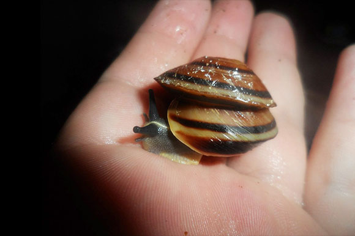 |
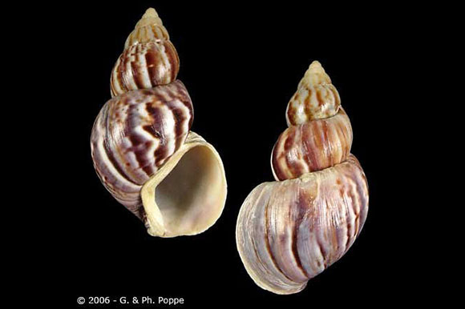 |
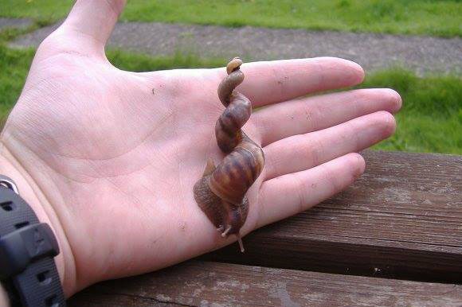 |
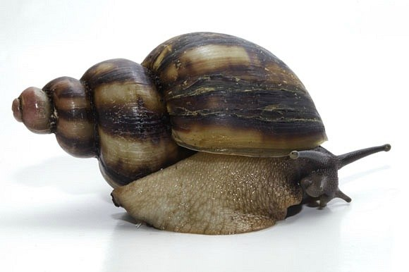 |
фото 5: аномально закрученная (левосторонняя) раковина
фото 6: отсутствие нижних щупалец
фото 7-8: лишние щупальца
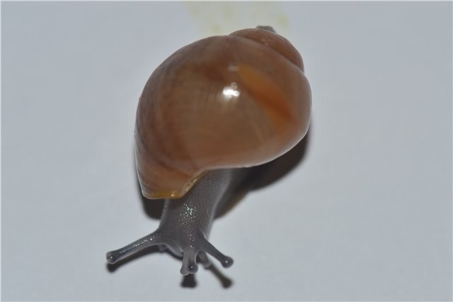 |
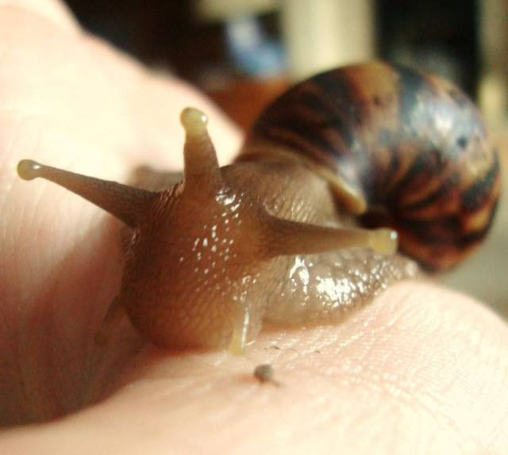 |
фото 9: сросшиеся верхние щупальца. прозваны "единорогами"
- ЧТО ТАКОЕ ГЕНБРАК?
(еще несколько слов об отбраковке и размножении)
Этот вопрос задается слишком часто. Хоть и есть статьи на эту тему, точнее на тему отбраковки, но многим не понятно до сих пор что такое генбрак.
ГЕНБРАК - Генетический брак, особи со слабым здоровьем, отстающие в роста, мелкие, с видимыми нарушениями анатомии тела и ракушки.
В природе эти особи не выживают обычно, они слабы, умирают или их съедают хищники. В домашних условиях контролем за чистотой вида занимаемся мы.
Как понять, какие улитки в кладке являются генбраком?
Для начала, надо вылупить всю кладку. Обязательно, уже писалось почему. Мелкие яйца обычно сами не вылупляются, но служат первым источником кальция для появившихся на свет малышей. Из всей кучи вылупившейся малышни раз в 2 недели (можно чаще, но не чаще раза в неделю) мы выбираем самых мелких. Вот это и есть генбрак - самые мелкие малыши. Можно подождать до месяца, тогда разница в размерах будет очень очевидной. Часто мелкие улитята сами умирают еще до месяца, или их съедают братосестры. Мы этому процессу не мешаем, это нормально.
А как понять, что купленная мной улитка генбрак?
Вот этот вопрос уже сложнее, если мы не знаем был ли отбор, даже если он был, то насколько правильно он был произведен. Часто новички покупают первую улитку в зоо, с рук, где хозяева ничего не знают сами о содержании и отборе. В таком случае запросто можно получить слабую, больную, плохо растущую особь.
Как же определить, какая улитка попала к вам в руки?
Пример: улитка отстает в размере от норм роста своего вида. Делаем вывод, что она генбрак? Нет, мы пока создаем правильные условия содержания, даем все подкормки и растим то, что есть. Улитка с хорошими генами начнет активно расти. Вывод о ее генах мы сможем сделать лишь тогда, когда рост улитки закончится, по ее окончательному размеру. Если улитка пошла в рост, активна и нагоняет потихоньку нормальные размеры - значит это просто затянутая особь, испорченная плохими условиями. С генами у нее все в порядке.
Ориентируемся на нормы размеров взрослых особей (см. таблицы), мы сделаем вывод - генбрак наша улитка или нет.
Бывает, что улитка еще в процессе роста начинает уходить за виток, отказываться от еды, происходят все возможные проблемы (выпадения органов, улитки, ломкость, слоение, шрамирование ракушки), а условия содержания при этом нормальные. В таком случае мы ищем ошибки, пытаемся подобрать условия содержания для улитки индивидуально (помним, что нормы по видам весьма условны, каждой улитке нужны свои нюансы). Если есть ошибки, исправляем их, подбираем наиболее подходящие для улитки температуру и влажность, при надобности проводим курс лечения (внимание! Не занимайтесь самолечением, если вы неопытный новичок! Обязательно консультируйтесь со знающими, опытными киперами!). Если после всех манипуляций улитка все так же продолжает болеть, тогда делаем вывод - улитка является генбраком. Она родилась изначально больной.
Можно ли давать размножаться генбраку?
Нет, и еще раз нет! Нельзя портить вид! В размножение допускаются только особи, достигшие минимально допустимых размеров ракушки. Если улитка сделала кладку до достижения минимальных размеров, но еще растет, то кладку морозить все равно.
Конечно, у мелких улиток в кладке могут быть и нормальные особи, но процент их очень мал (или таковых вообще не будет) по сравнению со слабыми особями.
Моя улитка не доросла 1-2 см до необходимого минимума, можно мне оставить от нее деток? Мы в этом вопросе категоричны - нет! Но нас ж никто не послушается... Поэтому объясняем - оставили всю кладку, и делаем жесточайший отбор!
"Взяла улитят от улиток маленького размера - они генбрак?"
Если размер родителей обусловлен неверным содержанием, а не генами, то ваши улитята могут оказаться с нормальными генами. Правда вероятность этого ничтожно мала. Улитки, выросшие в плохих условиях, отстающие в размерах, не могут быть здоровы, поэтому потомство их слабое как и сами родители. От слабых улиток рождаются слабые улитята.